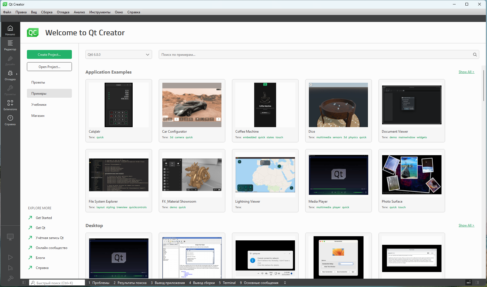

Установка Qt
Windows
Скачаем заранее подготовленный (добрыми людьми) архив : ссылка.
Далее:
Достаточно разархивировать эти 2 архива при помощи 7zip программы (важно). Разархивируем таким образом, чтобы у Вас получилась структура файлов как показано на схеме ниже:
С:\
├── Qt\
│ ├── 6.8.0\
│ ├── dist\
│ ├── Docs\
| ├── Examples\
| ├── installerResources\
| ├── Licenses\
| ├── Tools\
| ├── vcredist\
└────
ВАЖНО Именно диск C:\ и директория Qt\, не Qt6.8.0\.
Запускаем QtCreator (IDE для Qt) по пути:
C:\Qt\Tools\QtCreator\bin\qtcreator.exe.
Результат: рабочее окно QtCreator с рабочими примерами программ.
